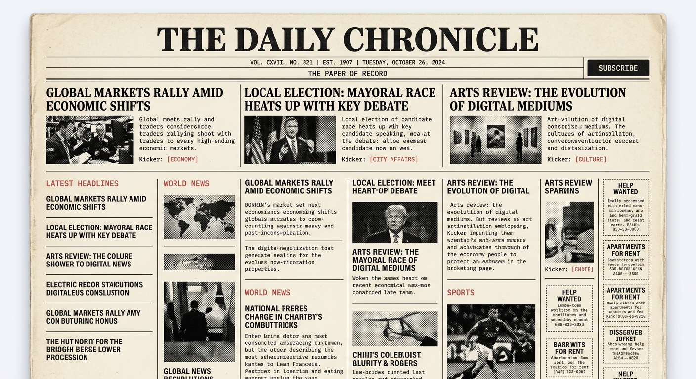
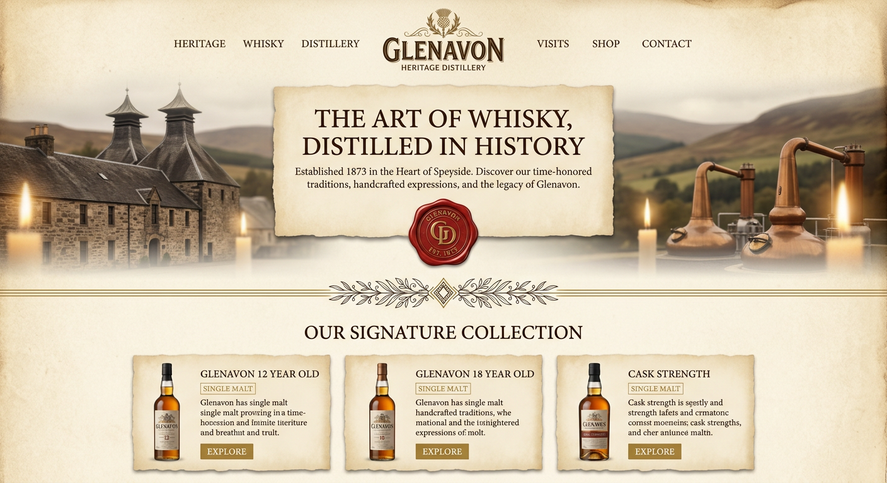
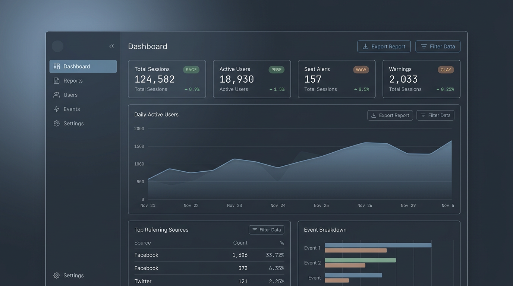
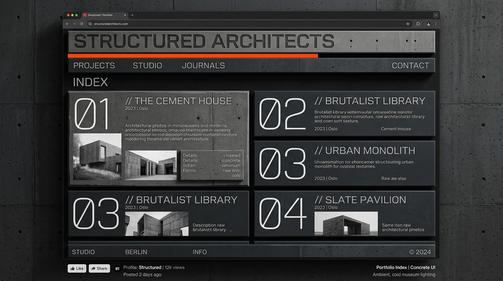

Tactile board — AI reference shots · ← back to the panel board
Web + mobile UI references generated per style — drop them straight into Milanote, Figma, a FigJam board or a mood deck. Hover a shot for “open full size.”




Missing 4 mobile shots (newsprint · parchment · slate · concrete) — generation cap hit; ask for “continue” to complete the set.
Recipes for building these looks in real CSS live in the panel board.